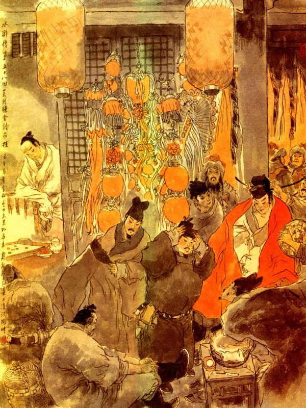
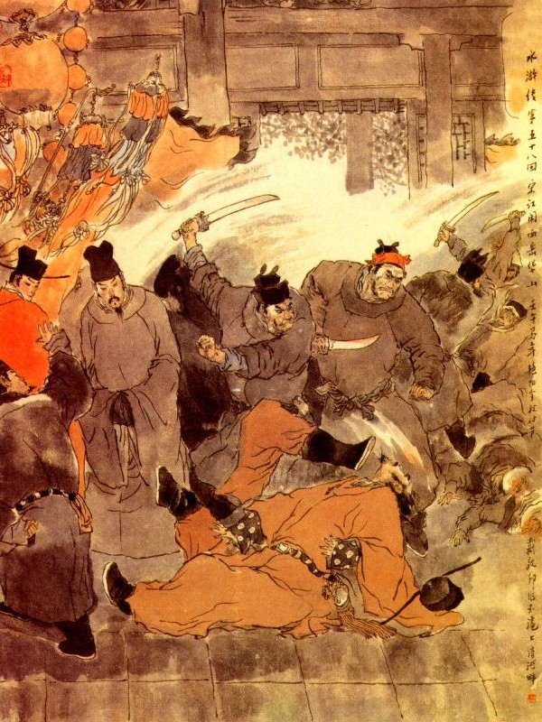

Bấy giờ chúng đem Lỗ Trí Thâm xuống thềm, Hạ Thái Thú chưa kịp trả lời thì Lỗ Trí Thâm đã trợn mắt cả giận, mắng quát lên rằng:
- Quân hiếu sắc hại dân này, bay dám bắt ta là nghĩa lý gì? Ta đây có chết cũng không cùng với anh em ta là Sử Tiến, không lấy gì làm hối hận song ta chỉ sợ Ca Ca ta là Tống Công Minh, tất không tha cho ngươi đó thôi. Ta bảo cho ngươi biết, thiên hạ không có việc oan uổn nào mà không giải tỏ được bao giờ? Ngươi muốn tốt đem Sử Tiến trả lại cho ta, đem cả Kiều Ngọc Chi ra đây để trả lại cho Vương Nghĩa, còn ngươi thì phải đem chức Thái Thú ở Hoa Châu mà đem trả lại cho triều đình ngay lập tức. Bay là đồ mặt giặc, mắt mèo, chỉ chăm chăm tửu sắc hoang dâm, còn toan làm cha mẹ dân sao được? Nếu biết điều mà nghe ta ba điều đó thì còn được tử tế bằng không thì sau này hối sao cho kịp? Hiện bây giờ hãy đưa ta tìm đến người anh em là Sử Tiến rồi thế nào trả lời cho ta biết.
Tri phủ nghe nói ức giận sôi nổi không biết nói làm sao được liền nghĩ thầm trong bụng rằng: "À? Gớm thằng này ta ngờ thích khách, hay đâu nó cũng một món với Sử Tiến thực? Quái ác! Hãy cứ giam nó xuống rồi sẽ xử sau." Nghĩ đoạn liền truyền lấy gông lớn gông Lỗ Trí Thâm lại, bỏ giam xuống ngục rồi nhất diện tư công văn, bẩm lên trên Tỉnh và đem giới đao thiền trượng niêm phong để ở Phủ Đường.
Bấy giờ tin tức náo đôïng phủ Hoa Châu, bọn tiểu lâu la nghe biết, liền trở về sơn trại báo cho các vị Đầu Lĩnh biết. Võ Tòng được tin báo cả kinh mà rằng:
- Chết nổi mình đi hai người đến đây, bị bắt mất một người vậy còn mặt mũi nào trở về Lương Sơn nữa?
Đương khi lo nghĩ kinh hoàng, bỗng thấy tiểu lâu la báo rằng:
- Có một vị đầu lĩnh ở Lương Sơn Bạc là Thần Hành Thái Bảo Đới Tung, đến thăm sơn trại, hiện còn ở dưới núi. Võ tòng nghe báo vội vàng xuống núi đón Đới Tung lên trên sơn trại. Khi lên tới nơi, Võ Tòng dẫn Đới Tung chào hỏi lũ Chu Vũ và đem chuyện Lỗ Trí Thâm thuật cho Đới Tung nghe.
Đới Tung nghe nói cả kinh mà rằng:
- Nếu vậy tôi phải về ngay Lương Sơn, nói với Ca Ca, đem binh xuống cứu, không thể ở đây lâu được.
Nói đoạn sai dọn cơm chay cho Đới Tung ăn. Đoạn rồi Đới Tung làm phép Thần Hành mà trở về Sơn Bạc.
Cách ba hôm sau về đến sơn trại, Đới Tung liền thuật chuyện Lỗ Trí Thâm và Sử Tiến cho Tiều Cái, Tống Giang nghe.
Tiều Cái cả kinh bảo với Tống Giang rằng:
- Hai người đó mắc nạn tất nhiên phải cứu mới xong. Vậy phen này tôi đi một chuyến không thể trì trệ được nữa.
Tống Giang lại nói:
- Ca Ca là chủ sơn trại, đi sao cho tiện? Việc này xin để mặc đệ đảm nhiệm. Nói đoạn liền chỉnh điểm quân mã chia làm ba đội đi ngay lập tức. Tiền quân có năm tướng làm Tiên Phong là Lâm Xung, Dương Chí, Hoa Vinh, tần Minh, Hô Diên Chước; dẫn một nghìn quân giáp mã, một nghìn quân bộ mở đầu đi trước; Trung quân có chủ soái Tống Giang, Ngô Dụng, Chu Đồng, Từ Ninh và Giải Trân, Giải Bảo, dẫn hai nghìn quân mã bộ đi giữa; Hậu quân có Lý Ứng, Dương Hùng, Thạch Tú, Lý Tuấn, Trương Thuận, năm vị Đầu Lĩnh dẫn năm nghìn quân mã bộ, coi đốc lương thảo đi sau. Bấy giờ cộng tất cả có bảy nghìn quân mã, cùng nhau xuống núi Lương Sơn mà trông chừng thẳng lối Hoa Châu.
Khi đến nửa đường, Tống Giang truyền cho Đới Tung đi trước để báo cho các Đầu Lĩnh ở Thiếu Hoa Sơn được biết. Bọn Chu Vũ nghe tin báo, bèn đến sắp sẵn các thứ dê, lợn, trâu ngựa, cùng các thức rượu ngon để đợi.
Mấy hôm sau, ba đạo binh Lương Sơn tới nơi, Võ Tòng liền dẫn Chu Vũ, Trần Đạt, Dương Xuân xuống núi nghinh tiếp.
Tống Giang, Ngô Dụng, cùng các Đầu Lĩnh kéo lên sơn trại rồi Tống Giang hỏi đến đầu đuôi các chuyện.
Chu Vũ đáp rằng:
- Hiện nay Lỗ Trí Thâm cùng Sử Tiến, đã bị Hạ Thái Thú giam ở trong lao, chỉ đợi sắc chỉ triều đình rồi sau sẽ liệu.
Tống Giang cùng Ngô Dụng đều hỏi rằng:
- Hiện nay trong thành giam hai con hùm lớn ở đó, tất nhiên họ phải phòng bị nghiêm trang, vậy chiều hôm nay ta xuống núi rồi khoảng trống canh một, ta sẽ nhờ bóng trăng suông mà xem xét trong thành mới có thể tiện được.
Tống Giang cùng các vị Đầu Lĩnh đều cho là phải mà cùng nhau lưu lại đến chiều.
Khi mặt trời đã xế hôm, Tống Giang cùng Ngô Dụng, Hoa Vinh, Tần Minh, Chu Đồng, cưỡi ngựa đi xuống núi. Vào khoảng đầu canh một, đi đến bên thành Hoa Châu, năm người bèn tìm một đống gò cao, ở gần thành mà nom vào. Bấy giờ đương dạo trung tuần tháng hai, trời quang mây tạnh, bóng trăng soi sáng giữa trời. Tống Giang cùng bốn người nom vào thành Hoa Châu, thấy thành cao đất rộng, hào lũy bọc chung quanh, có mấy toà cửa thành coi rất cao to hùng tráng, cách nơi Tây Nhạc Hoa Sơn không mấy. Năm người vừa nom vừa bàn luận với nhau, không có cách gì mà đánh ngay được.
Mọi người bảo với Tống Giang rằng:
- Ta hãy trở về sơn trại rồi hãy bàn định sau.
Nói đoạn năm người lại dong ngựa về lại phía Hoa Sơn. Khi về tới trại, Tống Giang ra dáng phiền nghĩ lo âu, không biết kế sao cho được. Ngô Dụng bèn truyền lệnh mười tên tiểu lâu la xuống núi để nghe dò tin tức gần xa.
Cách hai hôm sau, chợt thấy một người trở về báo rằng:
- Nay triều đình sai Quan Điện Tư Thái Úy, vâng lĩnh kim ngân điếu quải của Hoàng Thượng, rời Hoàng Hà vào sông Vị Hà, để dâng lễ ở miếu Tây Nhạc.
Ngô Dụng nghe báo liền bảo với Tống Giang rằng:
- Ca Ca không cần lo nữa, ta có thể thi được kế rồi.
Nói đoạn liền gọi Lý Tuấn, Trương Thuận ra dặn kế cứ thế này, thế này, mà làm.
Lý Tuấn nói:
- Chúng tôi mới đến đây, chưa thuộc địa thế, vậy nếu có một vị nào ở đây cùng đi thì có lẽ tiện hơn.
Bạch Hoa Xà Dương Xuân nói:
- Để tôi đi cho.
Tống Giang nghe nói cả mừng, liền cho Dương Xuân dẫn đường để cho Lý Tuấn, Trương Thuận cùng đi. Ngày hôm sau Ngô Dụng mời Tống Giang, cùng Chu Đồng, Hô Diên Chước, Hoa Vinh, Tần Minh, Lý Ứng dẫn hơn năm trăm người đến cửa sông Vị Hà. Khi tới nơi, thấy Lý Tuấn, Trương Thuận cùng Dương Xuân đã cướp được mười mấy chiếc thuyền lớn về đó. Ngô Dụng bảo Hoa Vinh, Tần Minh, Từ Ninh, Hô Diên Chước, bốn người phục ở trên bờ, còn Tống Giang, Ngô Dụng, Chu Đồng, Lý Ứng thì xuống cả dưới thuyền và lại sai Lý Tuấn, Trương Thuận, Dương Xuân chia thuyền đậu nấp ở đầu bến. Khi đặt đâu yên vào đó, đến sáng hôm sau, chợt nghe xa xa có tiếng trống chiên dậy đất rồi thấy ba chiếc thuyền quan kéo đến. Trên thuyền quan cắm lá cờ vàng viết mấy chữ "Tú Thái Úy vâng lệnh vua, ra dâng lễ miếu Tây Nhạc". Bấy giờ Chu Đồng, Lý Ứng đều cầm gươm trường đứng ở sau lưng Tống Giang, còn Ngô Dụng thì đứng ở đầu thuyền mà đợi.
Được một lát, thuyền quan nghênh ngang kéo vào bến nước rồi có hai mươi tên Ngu Hầu áo tía đai bạc, chạy ra quát lên rằng:
- Thuyền nào dám đậu bến làm ngăn trở thuyền quan thế kia?
Tống Giang nghe nói cúi rạp xuống chào rồi Ngô Dụng nói rằng:
- Nghĩa sĩ ở Lương Sơn bạc là Tống Giang xin hầu Thái Úy.
Bên kia có viên quan coi việc tiếp khách đáp lên rằng:
- Đây là quan Thái Úy đương triều, vâng lệnh vua ra lễ miếu Tây Nhạc. Vậy các ngươi là bọn giặc Lương Sơn, sao dám nghênh ngang đứng đó?
Tống Giang cúi mình lặng yên không đáp, Ngô Dụng lại nói lên rằng:
- Chúng tôi là nghĩa sĩ ở Lương Sơn, muốn được bái kiến tôn nhan Thái Úy, để kêu ngài có chút việc.
Viên quan coi việc tiếp khách hỏi:
- Các ngươi là hạng người nào mà dám đường đột xin đến hầu Thái Úy? Đoạn rồi mấy tên Ngu Hầu quát lên rằng:
- Các ngươi nói rõ mới được.
Tống Giang cứ lẳng lặng cúi mình mà không dậy. Ngô Dụng liền nói lên rằng:
- Xin tạm mời Thái Úy lên bờ, chúng tôi bàn có chút việc.
Viên quan coi việc tiếp khách quát lên rằng:
- Các ngươi không được nói càng, Thái Úy là quan đại thần trong triều, lẽ nào bàn việc với các ngươi?
Khi đó Tống Giang đứng dậy nói rằng:
- Thái Úy không chịu cho lũ chúng tôi tiếp kiến, chỉ sợ bọn thuộc hạ chúng tôi lại làm kinh động đến Thái Úy chăng?
Nói đoạn Chu đồng liền vẫy ngọn cờ trên mũi gươm, rồi Hoa Vinh, Tần Minh, Từ Ninh, Hô Diên Chước, cùng dẫn quân mã vương cung tên mà kéo ra đánh ở trên bến. Bọn lái đò thuyền quan thấy vậy đều kinh sợ nhảy nấp vào trong khoang. Viên quan tiếp khách cũng sợ hãi kinh hoàng, vội vào báo cho Thái Úy biết. Tú Thái Úy thấy vậy, đành phải ra đầu thuyền, bắt ghế ngồi để tiếp khách.
Tống Giang cúi mình chào mà nói rằng:
- Chúng tôi có điều đường đột, xin ngài tha lỗi cho. Tú Thái Úy nói:
- Vì cớ sao nghĩa sĩ ngăn đón thuyền tôi như vậy? Tống Giang nói rằng:
- Chúng tôi đâu dám ngăn đón thuyền ngài. Chỉ xin phép ngài lên trên bờ, cho chúng tôi được bẩm chút việc thôi.
Tú Thái Úy nói rằng:
- Tôi vâng mệnh vua ra lễ ở Nhạc Tây đối với nghĩa sĩ thì tịnh không có việc gì mà phải nói? Vả chăng một ông quan của triều đình, lẽ nào lại kinh dị lên bờ ngay được? Bên kia Ngô Dụng nói lên rằng:
- Nếu Thái Úy không chịu lên bờ, e khi bọn thủ hạ không chịu để yên thì thực không tiện.
Nói đoạn Lý Ứng vẫy gươm ra hiệu rồi Lý Tuấn, Trương Thuận, Dương Xuân, đều đuổi thuyền xô cả đến. Tú Thái Úy thấy vậy lấy làm cả kinh!
Lý Tuấn, Trương Thuận, cầm đao sáng loáng ở tay, chạy sang ngay thuyền Thái Úy, gạt ngã mấy tên Ngu Hầu xuống nước.
Tống Giang vội thét lên rằng:
- Khoan! Không được làm liều như thế?
Lý Tuấn, Trương Thuận bèn nhảy tùm xuống nước vớt hai tên Ngu Hầu, vất trả lên thuyền rồi hai người cùng nhảy lên thuyền để đứng. Tú Thái Úy cùng mọi người thấy vậy đều cả sợ xanh mặt cả lên.
Tống Giang và Ngô Dụng quát lên rằng:
- Bay hãy lui ra, không được kinh động Đại Quan Nhân như thế, để ta sẽ mời Thái Úy lên bờ cũng được.
Tú Thái Úy nói với Tống Giang rằng:
- Ở đây không thể nói chuyện được, vậy xin mời Thái Úy lên qua trên trại cho chúng tôi thưa chuyện thì mới ổn tiện, nếu chúng tôi có lòng nào hại đến ngài thì xin thần linh ở Tây Nhạc sẽ gia tội đến chúng tôi.
Bấy giờ Thái Úy không nghe không được, đành phải nghe lời mà đi lên trên bờ. Đoạn rồi có mấy người đứng nấp trong bụi cây, dắt ngựa ra mời Thái Úy lên ngựa để cùng đi lên núi. Tống Giang liền sai Tần Minh, Hoa Vinh đưa Thái Úy về sơn trại trước rồi cùng Ngô Dụng lên ngựa, bắt tất cả những người trong thuyền quan và các đồ hương hoa lễ vật mà khiêng về trên núi và để Lý Tuấn, Trương Thuận lãnh hơn trăm người coi giữ chiếc thuyền ở đó.
Khi về tới Thiếu Hoa Sơn, Tống Giang cùng Ngô Dụng mời Thái Úy lên Tụ Nghĩa Sảnh, đặt ngôi giữa, còn các vi Đầu Lĩnh cầm binh khí đứng hầu cả hai bên. Đoạn rồi Tống Giang ra trước mặt Thái Úy lạy xuống bốn lạy mà rằng:
- Tống Giang tôi nguyên là kẻ tiểu lại ở huyện Vận Thành nhân Bị Quan Tư bức bách, bất đắt dĩ phải họp mấy anh em tạm lánh ở Lương Sơn Bạc, để đợi triều đình thương lại, sẽ ra sức găng công mà đền ơn non nước, gánh vác mọi trách nhiệm. Nay chẳng hay có hai người anh em bị Hạ Thái Thú sinh chuyện lôi thôi giam vào trong ngục, vậy chúng tôi xin mượn các đồ nghi vệ của Thái Úy ra lễ Nhạc Tây để đánh lừa quan lại Hoa Châu mà cứu cho anh em thoát nạn. Sau khi công việc đã xong, chúng tôi lại xin trả lại Thái Úy hẳn hoi, không dám chút gì xâm phạm, xin Thái Úy rộng phép mà ưng thuận lời cho.
Thái Úy nói rằng:
- Cái đó không ngại chi, song nếu triều đình sau này biết đến thì Hạ Quan đây nguy hiểm không chơi.
- Xin Thái Úy về triều, cứ đổ tội cho Tống Giang tôi là được.
Thái Úy nghĩ quanh nghĩ quẩn, thấy sự thế không thể nào từ chối được liền bất đắc dĩ mà nhận lời cho mượn.

Tống Giang nghe nói cả mừng, sai đặt tiệc thiết đãi Thái Úy rồi lấy áo xiêm của Thái Úy cùng mọi người theo hầu Thái Úy để mặc. Tống Giang sai một tên lâu la mặt mũi khôi ngô, cạo sạch râu ria, ăn mặc giả làm Thái Úy Tú Nguyên Cảnh, Tống Giang, Ngô Dụng giả làm quan tiếp khách, Giải Trân Giải Bảo, Dương Hùng Thạch Tú giả làm Ngu Hầu, còn bọn tiểu lâu la đều áo tía đai bạc, tay cầm các cờ hiệu mà khiêng hương hoa lễ vật ra đi. Hoa Vinh, Chu Đồng, Từ Ninh, Lý Ứng giả làm bốn tên vệ binh. Chu Vũ, Trần Đạt, Dương Xuân khoãn đãi bọn Thái Úy ở nhà, lại sai Tần Minh, Hô Diên Chước dẫn một đội nhân mã; Lâm Xung, Dương Chí dẫn một đội nhân mã chia làm hai mặt để đánh thành. Lại sai Võ Tòng ra đợi ở miếu Tây Nhạc để chờ hiệu thi hành. Khi sắp đặt xong các vị Đầu Lĩnh đều kéo ra thuyền và cho Đới Tung vào báo trước ở miếu Nhạc Tây.
Bấy giờ Chủ Quan cùng các người chức việc phía trong miếu nghe báo, liền vội vàng kéo nhau ra đến bến thuyền để đón quan Thái Úy. Các đồ hoa hương đèn nến, cùng là bảo cái đồng nhan, đều dàng lên trước rồi đem ngự hương đặt lên long đình, cho người trong miếu khiêng vào và dẫn Kim Linh Điếu Quảy về miếu. Khi chủ quan xin bái yết Thái Úy, Ngô Dụng liền gạt đi rằng:
- Thái Úy đi đường bị cảm, không tiếp kiến được, đem kiệu đây để đón người lên.
Tả hữu vâng lời rồi đón Thái Úy lên kiệu mà đưa đến nhà Quan Sư trong miếu Tây Nhạc. Viên tiếp khách là Ngô Học Cứu bảo với viên chủ quan rằng:
- Nay quan Thái Úy vâng lệnh triều đình đem ngự hương cùng Kim Linh Điếu Quải ra dâng thánh lễ ở đây, vậy mà các quan ở bản quân không ai ra tiếp kiến là nghĩa làm sao? Chủi Quan nói rằng:
- Chúng tôi đã cho người đi báo có lẽ đến cả ngay bây giờ.
Vừa nói dứt lời thì có viên quan ở bản châu, dẫn dăm bảy mươi tên lính, mang các thức rượu chè hoa quả đến hầu Thái Úy. Khi viên quan đó tới nơi, các quan hầu dẫn vào chỗ xa xa trước mặt để lại chào. Viên quan đó thấy Thái Úy tựa chăn nằm trên giường chỉ lấy tay chỉ chỏ ra ngoài mà không nói gì cả.
Đoạn rồi viên quan tiếp khách ra trách quan ở bản châu rằng:
- Thái Úy là một vị đại thần trong triều, vâng lệnh vua, nghìn dặm tới đây, chẳng may đi đường mắc cảm, thế mà các quan bản châu không ai ra tiếp là nghĩa làm sao?
Viên quan bản châu đáp rằng:
- Bẩm ngài, tuy mấy hôm trước có giấy của quan trên sức xuống, song ngày nay không thấy giấy báo, nên chúng tôi không được biết để mà nghinh tiếp. Vả chăng mấy hôm nay, có bọn giặc ở núi Thiếu Hoa, kết liên với bọn giặc ở Lương Sơn, đến đánh phá thành trì, bởi vậy Quan Phủ chúng tôi phải lưu lại coi thành mà cho chúng tôi ra đây dâng chén tiếp phong rồi Quan Phủ chúng tôi sẽ đến bái yết sau.
Viên quan tiếp khách đáp rằng:
- Bây giờ Thái Úy không uống rượu chè gì đâu, về nói với quan phủ mau ra đây để dâng lễ mới được.
Viên quan ở Hoa Châu, vâng lời rồi đem rượu ra để mời các viên quan tiếp khách, cung các người theo hầu Thái Úy. Đoạn rồi quan tiếp khách vào bẩm với quan Thái Úy, lấy chìa khoá ra mở túi lấy đôi Kim Linh Điếu Quải, treo lên hai cành trúc cho viên quan ở Hoa Châu xem. Quan ở Hoa Châu nom thấy, quả là một đôi Kim Linh Điếu Quả, của những tay thợ giỏi ở trong nội phủ chế ra, chung quanh toàn khảm bằng thất bảo, giữa đặt một ngọn đèn bằng xa đỏ, trông rất huy hoàng rực rỡ, dân gian chưa hề trông thấy bao giờ, khi xem xong, quan tiếp khách lại cất vào hương nang khoá lại cẩn thận rồi lấy các giấy má của phủ Trung Thư, đưa cho viên qua Hoa Châu và giục phải về ngay bảo quan Thái Thú tới để chọn ngày làm lễ, quan Hoa Châu vâng lời rồi trở lại trong thành để báo cho Hạ Thái Thú biết.
Tống Giang thấy tên quan viên trở ra rồi thì trong lòng hớn hở mừng thầm, chắc rằng Hạ Thái Thú dù khôn khéo đến đâu cũng không thể nào không hoa mắt rối lòng mà tránh thoát thần mưu đó được. Bấy giờ Võ Tòng chực ở ngoài cửa miếu, Ngô Dụng lại sai Thạch Tú dắt dao nhọn tại đó, để giúp Võ Tòng làm việc và cho Đới Tung giả làm Ngu Hầu để đợi. Trong kia bọn chủ quán cùng các người làm việc trong quân thì vẫn điềm nhiên, kẻ hiếu cơm người dâng lễ vật, dưới trên sắp đặt rất chỉnh đốn lễ nghi.
Tống Giang xem quanh trong miếu Tây Nhạc, thấy cung điện nguy nga, trên dưới lịch sự, quả nhiên là một nơi miếu mạo hiếm có xưa nay, Tống Giang xem khắp một lượt rồi khi về trước cửa nhà quan cư thì ngoài cửa báo là Hạ Thái Thú đã đến.
Tống Giang liền gọi bốn tên lính vệ là Hoa Vinh, Từ Ninh, Chu Đồng, Lý Ứng đều cầm binh khí đứng ra hai bên, Giải Trân, Giải Bảo, Dương Hùng, Đới Tung đều giắt khí giới trong mình mà đứng hầu hai bên tả hữu.
Khi đó Hạ Thái Thú dẫn hơn ba trăm người, đi đến trước cửa miếu lũ lượt kéo vào. Hai viên quan tiếp khách là Ngô Dụng, Tống Giang thấy vậy, liền quát lên rằng:
- Cho Quan Đại Thần ở đây, những người vô sự không được vào gần.
Chúng nghe nói, liền đứng cả lại, để một mình Hạ Thái Thú đi vào. Quan tiếp khách truyền chỉ ra rằng:
- Thái Úy cho mời thái thú vào đây.
Hạ Thái Thú vâng lời vào trước cửa quan cư rồi cúi đầu lạy chào Thái Úy giả.
Quan tiếp khách hỏi lên rằng:
- Quan Thái Thú có biết tội không?
Hạ Thái Thú nói rằng:
- Chúng tôi không được biết quan Thái Úy đến đây, nên không kịp ra thành nghinh tiếp, dám xin ngài tha tội cho.
Quan Thái Úy vâng lệnh triều đình ra đây mà không tiếp đón là nghĩa lý sao?
- Bẩm, vì chúng tôi không tiếp được giấy báo là đã đến nơi, nên không kịp ra đón tiếp.
Bỗng có người quát lên rằng:
- Bắt lấy cho ta.
Nói dứt lời thì anh em Giải Trân, Giải Bảo rút phăng gươm ra cầm cẳng Hạ Thái Thú xuống rồi cắt lấy đầu.
Tống Giang lại quát lên rằng:
- Anh em đâu! Hạ thủ đi.

Bọn ba trăm người thấy vậy đều kinh sợ rụng rời mà không sao chạy được. Tụi Hoa Vinh liền xông vào mà đánh giết, bọn kia luống cuống non nửa chạy ra ngoài cửa miếu, bị Võ Tòng, Thạch Tú cùng đám tiểu lâu la đổ xô ra chém giết, không còn sống sót một ai. Còn những người lục tục đến miếu sau, đều bị Trương Thuận, Lý Tuấn giết cả một lượt.
Bấy giờ Tống Giang kịp thu cả ngự hương điếu quải, đem cả xuống thuyền rồi cùng nhau kéo đến thành Hoa Châu. Khi tới nơi trong thành đã có hai chỗ bốc lửa lên đùng đùng, chúng liền nhất tề kéo vào, xông đến nhà đại lao, cứu Sử Tiến cùng Lỗ Trí Thâm ra rồi mở các kho đụn, lấy tất cả của cải mà xếp lên xe tất cả.
Lỗ Trí Thâm được thoát ra, vội vàng chạy vào phủ đường, tìm thấy giới đao huyền trượng rồi tìm đến Ngọc Kiều Chi thì đã đâm đầu xuống giếng mà tự tử mất rồi. Chúng thấy vậy, liền kéo nhau ra thuyền trở về Thiếu Hoa Sơn. Về đến sơn trại, Tống Giang sai đem các đồ lễ vật, cùng áo xiêm nộp trả Thái Úy rồi lấy ra một mâm kim ngân tạ ơn Thái Úy và đưa khắp lượt mọi người theo hầu. Đoạn rồi đặc tiệc tiễn hành mà đưa Thái Úy về thuyền tử tế.
Khi tiễn chân Thái Úy trở về, Tống Giang liền bàn với Sử Tiến, Chu Vũ, Trần Đạt, Dương Xuân, thu thập tiền lương nhân mã mà đốt bỏ sơn trại để kéo quân về cả Lương Sơn, còn Vương Nghĩa thì cho ít tiền để đi nơi khác.
Bên kia Tú Thái Úy khi trở về thuyền rồi cùng nhau kéo đến Hoa Châu, biết rằng bọn Lương Sơn Bạc đã đánh giết quân quan, cướp hết Phủ Khố, quân lính trong thành chết hết hơn một trăm người, lừa ngựa đều bị cướp mất, lại giết mấy trăm người ở miếu Tây Nhạc, thiệt hại không biết đến đâu mà kể, Thái Úy liền sai quan bản châu thảo công văn, thuật lại tội Tống Giang cướp lấy các đồ lễ vật, giả làm quan Thái Úy đánh lừa quan Thái Thú họ Hạ, cùng là đánh giết cướp bóc các lễ, để tư vào phủ Trung Thư. Đoạn rồi Thái Úy đem lễ vật ra dâng lễ miếu Tây Nhạc mà lập tức trở về triều cùng Thiên Tử.
Nói về Tống Giang, hôm đó cùng bốn hảo hán ở Thiếu Hoa Sơn, chia quân ra làm ba đội kéo về Lương Sơn Bạc đi qua các dân xã, không hề xâm phạm của ai, khi về gần tới nơi, sai Đới Tung về sơn trại báo cho các Đầu Lĩnh biết. Tiều Cái nghe báo, bèn cùng các vị Đầu Lĩnh xuống núi đón lên Tụ Nghĩa Sảnh rồi cùng nhau mở tiệc ăn mừng.
Ngày hôm sau Sử Tiến, Chu Vũ, Trần Đạt, Dương Xuân, đều xuất tiền của riêng để làm việc tạ ơn Tiều Cái, Tống Giang rất là long trọng.
Trong khi yến tiệc, Tiều Cái nói với Tống Giang rằng:
- Tôi có một việc này, vì bấy lâu hiền đệ đi vắng, chưa đám thi hành, vả lại mấy hôm nay lại có bốn anh em mới đến ở đây, nên chưa tiện nói ra. Nguyên hôn trước Chu Quý lên bảo với tôi rằng: "Trong núi Mang Đãng, ở huyện Bái thuộc phủ Từ Châu, có một bọn cường nhân, tụ đến ba nghìn nhân mã ở đó, đầu đảng là một tiên sinh họ Phàn tên Thụy, biệt hiệu là Hỗn Thế Ma Vương, có tài gọi gió kêu mưa, dùng binh như thần vậy. Thủ hạ có hai người phó tướng, một người là Hạng Sung, biệt hiệu là Bát Tý Na Tra, tay cầm thanh gươm Thiết Liêu, lại có một cây đoản bài và khiến hai mươi bốn khẩu phi đao, trăm thước giết người, không sai một chút. Một người nữa, tên là Lý Cổn, biệt hiệu là Phi Thiên Đại Thánh, tay cầm một khẩu bảo kiêm cũng dùng một lá đoản bài khiến hai mươi bốn thanh gươm nhọn, giết người ngoài trăm thước mà cũng không hề sống sót một ai. Ba người đó kết làm anh em, chiếm khu núi đó cướp bóc kiếm ăn và định đến đánh cả Lương Sơn Bạc ta đây. Tôi rất lấy làm bực tức mà chưa có thể trừ ngay đi được.”
Tống Giang nghe nói, hầm hầm nổi giận mà rằng:
- Tên đó lại dám vô lễ như vậy, để tiểu đêï đến đó một phen mới được.
Sử Tiến bèn đứng dậy nói với Tiều Cái, Tống Giang rằng:
- Bốn anh em tôi mới đến đây, chưa hề có một chút công lao, vây chúng tôi xin đem quân bản bộ, cùng với Chu Vũ, Trần Đạt, Dương Xuân, từ giã Tống Giang, cùng các vị Đầu Lĩnh mà xuống núi kéo quân đi đánh.
Cách mấy hôm, đi đến một chỗ gần toà núi, Sử Tiến thở dài mà hỏi rằng:
- Quanh đây không biết chỗ nào là chỗ ông Cao Tổ nhà Hán, chém rắn khởi nghĩa khi xưa.
Nói đoạn ba người cùng thở dài mà ngơ ngẩn kéo đi. Khi tới địa phận núi Mang Sơn, Sử Tiến liền dàn quân thành trận thế, có ba Đầu Lĩnh là Chu Vũ, Trần Đạt, Dương Xuân đứng đằng sau.
Được một lát trên núi Mang Đãng có một đoàn nhân mã kéo xuống, có ba vị hảo hán đi đầu, một người là Hạng Sung, khiến lá đoản bài, lưng dắt hai mươi bốn khẩu phi đao, tay hữu chống tiêu sang, mặt sau có lá cờ hiệu đề bốn chữ "Bát Tý Na Tra"; Một người là Lý Cổn cũng khiến lá đoản dài, lưng dắt hai mươi bốn thanh gươm nhọn, tay hưu chống kiếm, phía sau cũng có một lá cờ hiệu, trên viết bốn chữ "Phi Thiên Đại Thánh".
Nguyên hai người đó ở trên núi, nghe báo có quân mã đến đánh liền kéo tiểu lâu la xuống để chống cự. Khi xuống dưới núi, thấy Sử Tiến cùng ba hảo hán đương kìm ngựa đứng đợi ở đó, hai người bèn sai tiểu lâu la khua chiêng gõ trống, kéo xông ra đánh mà không hỏi han chi cả. Bên kia hậu quân của Sử Tiến, bị thua bỏ chạy, Sử Tiến liền thúc quân chống lại và bọn Chu Vũ coi giữ trung quân để giúp đánh rồi sau cũng chạy lui ra ngoài bốn mươi dặm. Trong khi lui chạy, Sử Tiến suýt nữa trúng phải phi đao, còn Dương Xuân luống cuống bị một phát phi đao đâm vào chân ngựa, chàng liền bỏ ngựa mà chạy lấy thân cho thoát. Sau Sử Tiến điểm lại nhân mã mất đến quá nửa, chàng lấy làm lo sợ toan sai người về cầu cứu ở Lương Sơn.
Đương khi lo nghĩ vẫn vơ thì chợt thấy quân sĩ báo rằng:
- Về con đường phía Bắc có một toán nhân mã, ước chừng hai nghìn người kéo đến. Bọn Sử Tiến nghe báo bèn đem ngựa ra nom thì thấy bóng cờ Lương Sơn phất phới rồi có hai viên Thượng Tướng là Tiểu Lý Quảng Hoa Vinh và Kim Ban Sang Từ Ninh dẫn quân đi đến.
Sử Tiến tiếp đón Hoa Vinh, Từ Ninh, thuật chuyện võ nghệ của Hạng Sung, Lý Cổn cho hai người nghe.
Hoa Vinh nói rằng:
- Tống Công Minh Ca Ca thấy Huynh trưởng đi rồi trong lòng lấy làm áy náy không yên, bèn cho chúng tôi đến đây để giúp.
Bọn Sử Tiến nghe nói cả mừng, liền họp quân vào một chỗ để đóng trại. Sáng hôm sau, đương kéo quân ra đánh, bổng thấy quân sĩ vào báo rằng:
- Con đường bên Bắc lại có một toán nhân mã nữa kéo đến.
Hoa Vinh, Từ Ninh, cúng lên ngựa ra xem, thấy Tống Công Minh cùng Ngô Dụng, Công Tôn Thắng, Sài Tiến, Chu Đồng, Hô Diên Chước, Mục Hoằng, Tôn Lập, Hoàng Tín, Lã Phương, Quách Thịnh, dẫn ba nghìn nhân mã kéo đến.
Sử Tiến đem chuyện thua thuật lại cho mọi người nghe. Tống Giang nghe nói, lấy làm cả kinh. Ngô Dụng liền khuyên đem quân hạ trại rồi sẽ bàn định. Tống Giang nóng tính, toan tiến binh bắt đánh ngay, liền kéo binh đến gần núi để xem.
Bấy giờ trời đã gần tối chợt thấy trên núi Mang Đãng có bóng đèn lồng sắc xanh, Công Tôn Thắng bèn nói với mọi người rằng:
- Trong trại giặc thắp đèn xanh thế kia, tất nhiên là có người biết dùng phép thuật yêu tà, vậy chúng ta hãy lui quân ra xa, để sáng mai tôi hiến một phép có thể bắt được mấy người ấy.
Tống Giang cả mừng, truyền lui quân hai mươi dặm để hạ trại, đợi sáng hôm sau phá trận Ma Vương.
Mới hay:
Trông tan thương những chạnh lòng
Trách ai tham cái má hồng mà chi
Vẻ gì một chút tình si,
Thành tan nước mất tội thì tại ai?
Thương thôi lại giận cho đời,
Trăm năm bao hết giống người vô lương?
Có chăng nhờ bút văn chương
Đem tranh chính nghĩa làm gương cho đời.
Lời bàn của Thánh Thán
Theo tục bản chép một đoạn văn Lỗ Trí Thâm cứu Sử Tiến thô bỉ đến nổi không muốn đọc, lại lạ cho tác giả sao ngọn bút tồi thay? Khi gặp cổ bản, mới phục nguyên văn tả được thế này? Ta mới than: Văn chương nảy tự trong lòng một ngày của ta mà truyền đến tay người đời xem mãi, thế nhân chưa thể biết mà truyền tay nhân thế mãi, ta lại không nhận được, khi đó văn chương không thể nói ra, chỉ tiếp tục bản chép như thế, khiến cho độc giả không thể rơi lệ buồn rầu về nổi văn chương?
Một đoạn tả ngăn thuyền ở Vị Hà, trước tả Chu Đồng, Ngô Dụng đứng đầu thuyền làm một tổng đề rồi sau chia làm hai bức, một bức tả Ngô Dụng nói chuyện với quan tiếp khách rồi chuyển ra Tống Giang, Tống Giang chuyển ra Chu Đồng, Chu Đồng chuyển ra trên bờ, có Hoa Vinh, Tần Minh, Từ Ninh, Hô Diên Chước, đó một dạng thanh thế; một bức tả Tống Giang cùng Thái Úy vấn đáp rồi chuyển ra Ngô Dụng, Ngô Dụng lại chuyển đến Lý Ứng, Lý Ứng lại chuyển ra trên sông có Lý Tuấn, Trương Thuận, Dương Xuân, đó một dạng thanh thế rồi sau đến bức thứ ba, tả Tống Giang, Ngô Dụng nhất tề làm ra để tổng kết lại, chương pháp đã tề chỉnh lại biến hoá, thực chẳng phải chỉ viết qua loa.
Cực tả Quan Thái Thú Hoa Châu là người gian hoạt, để mà rõ cớ bắt được Sử Tiến, Lỗ Đạt hai phen thích khách không thành, thế mà đọc đấy lại không thấy dấu vết chỗ nào là bổ tả, đã tự khiến người ta tưởng thấy lúc ấy với việc ấy, xét chẳng phải có bổ tả rõ mới là bổ tả, lại là một phép bổ tả của văn chương.
Sử Tiến một lời than ở núi Mang Đãng cũng ám dụng việc xưa, thời Nguyễn Tạ không ai anh hùng, đáng gọi rằng nêu sâu chí của Đại Lang, đối với việc thua ở Mang Sơn, chỉ làm một phép giao chuyển của văn chương cho nẩy ra Công Tôn Thắng chứ đừng vị thế mà tiếc cho chí Đại Lang.